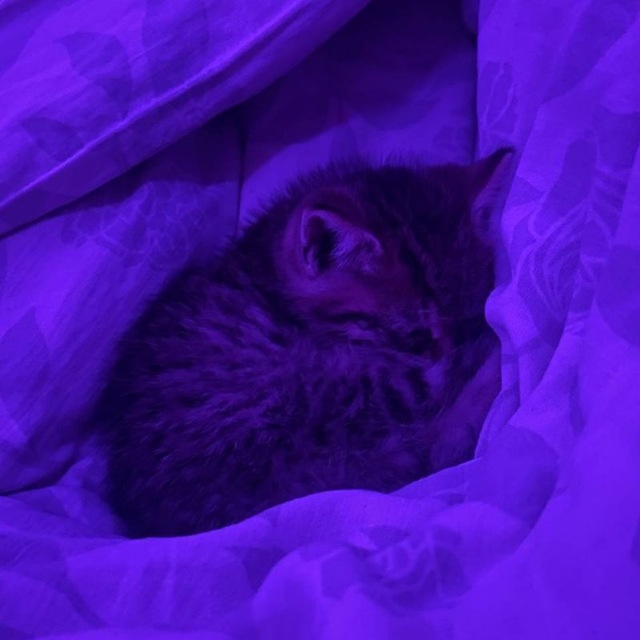

Шим и LLM-агенты
Локальный прокси между клиентом и языковой моделью, плюс конвейер из десяти агентов на бесплатных провайдерах: читают код, сжимают модули, ищут баги. Здесь же — счётчики токенов и логи расхода.
Пишу ботов, сервисы и автоматизацию. Python и JavaScript, панель управления — своя, инфраструктура — своя. Люблю задачи, где нужно разобраться в чужой системе, найти узкое место и сделать так, чтобы оно перестало быть узким.
Боты, сервисы и автоматизация — от идеи до работающего кода.
Немного из того, что собрано руками — от инфраструктуры до ботов. Остальное на GitHub.
Локальный прокси между клиентом и языковой моделью, плюс конвейер из десяти агентов на бесплатных провайдерах: читают код, сжимают модули, ищут баги. Здесь же — счётчики токенов и логи расхода.
Приём фото и сообщений, диалог с памятью, очередь задач. Отдельный демон читает личную переписку и отдаёт её только по запросу — без фоновых расходов.
Музыкальные и модерационные боты на discord.js, начиная с 2021 года. Часть — учебные проекты по видео-курсам, часть написана для реальных серверов.
То же, что и в Telegram — только здесь можно показать крупнее.

Быстрее всего — Telegram. По работе и сотрудничеству пишите туда.